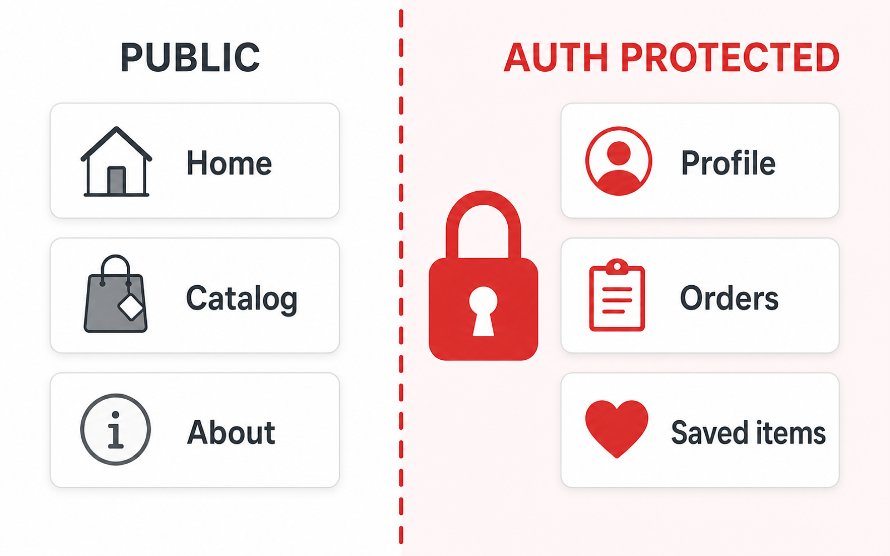
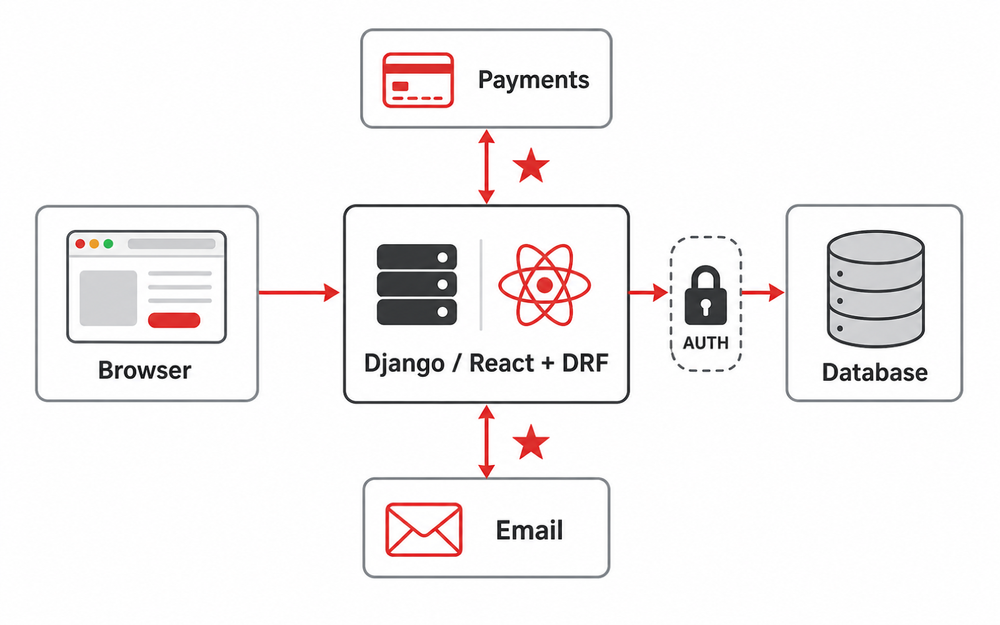

A technical plan prevents the project from becoming a pile of generated files. It names what is local, remote, private, and risky.
Students choose tools before naming the data flow.
Auth is added without explaining what data it protects.
AI-generated files cause architecture drift.
Auth only earns its place when there is protected data, ownership, or personalization.
Where users act.
What the app understands.
What persists, and where.
Who owns the data.
External dependencies.
Models should reflect user stories, not just database convenience.

Catalog can start in SQLite; payments need external services.
Time zones and double-booking need careful model decisions.
User content needs moderation, media storage, permissions.
Not every app needs React or a separate API. Complexity should buy something.
Which one layer is this change touching — and can you explain it after?

Pages · Models · Database · Auth · APIs & services.